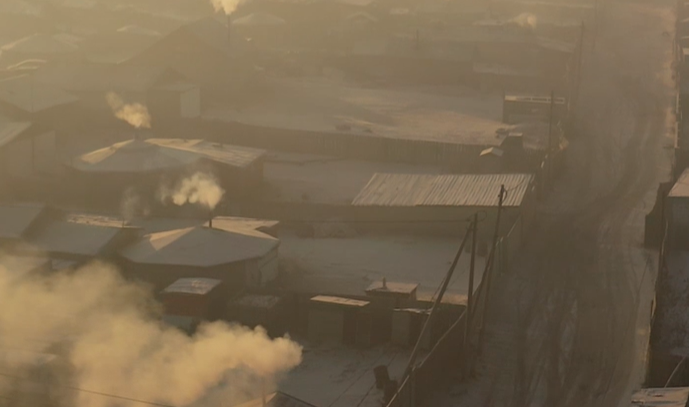
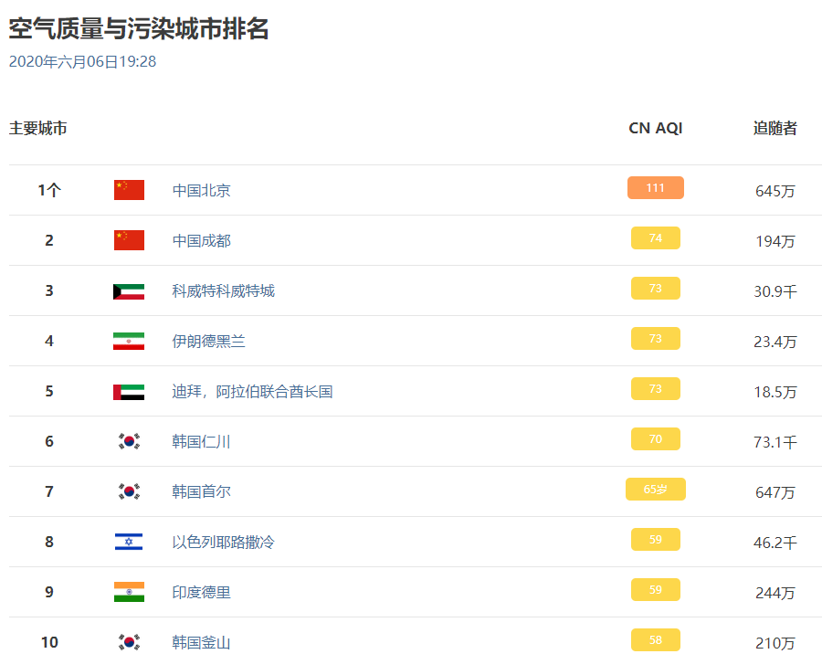
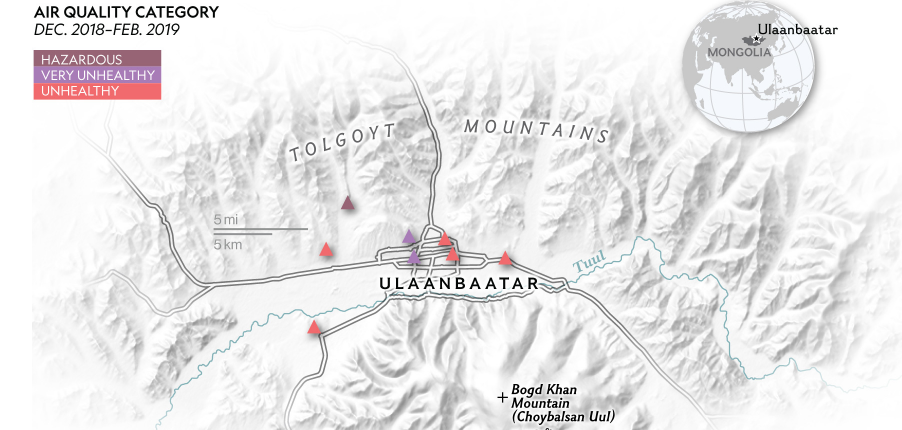

在地球上污染最严重的城市之一，孩子们遭受的苦难最大
冬季，煤炉和发电厂窒息了蒙古首都乌兰巴托，并引发了烟雾和肺病。
在乌兰巴托严酷的冬天，人们用煤为房屋供暖，包括被称为“热啤酒”的圆形帐篷，污染最为严重。在这里，早晨的阳光穿透了Bayankhoshuu附近的烟雾和柴油烟雾。
蒙古的污染问题是世界范围内更为严重的一个问题。从美国和德国到印度和中国，空气污染每年在全球范围内缩短约700万人的生命。煤炭是造成空气污染和气候变化的主要原因之一。
在蒙古，至少到目前为止，煤炭对于生存残酷的冬季至关重要。但是要付出的代价是巨大的。
|
|
|  |
|
蒙古乌兰巴托煤炭在蒙古的寒冷首都中随处可见。它坐落在发电厂高耸的烟囱下方，堆成与足球场一样大的烟囱。司机在皮卡车的敞开的床中将其拖过城镇。供应商在路边堆放着黄色的东西袋，锯齿状的碎片从金属桶里洒落在圆形的毡房里，最贫穷的家庭燃烧那里以防严寒。
乌兰巴托的烟雾有时如此浓厚，以至于人们和建筑物仅在轮廓上可见。它的气味刺鼻且难逃。乌黑的空气刺痛着喉咙，飘荡在城镇中心闪闪发光的现代化办公大楼内，并蔓延到块状的，苏联式的公寓大楼中，这些大楼向城市边缘的山脉蔓延。在糟糕的日子里，由于读数飙升了数十倍，超出了建议的限值，因此手持式污染监测仪将达到极限。最微小和最危险的空气中颗粒物PM-2.5的含量曾经达到世界卫生组织建议的最高含量的133倍。

寒冷的地方，致命的烟雾
蒙古首都乌兰巴托坐落在一个狭窄的山谷中，有将近150万人居住，空气污染是世界上最严重的，尤其是在冬天，许多房屋都用煤炉供暖。烟尘微粒（PM2.5）（最危险的一种空气污染）的水平可能上升到世界卫生组织安全极限的20倍以上。
在乌兰巴托附近的一家炼油厂，从煤中去除了水分和一些污染物，使其成为“更清洁”和更有价值的燃料，扫地的工人戴着口罩，以保护他免受细小灰尘的侵害。在炼油厂从火车上卸煤的工人有时会被东西吞没。
|
|